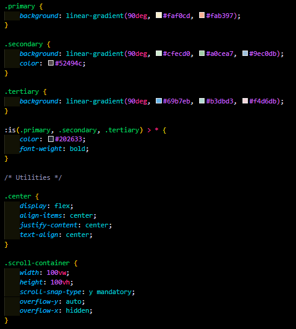
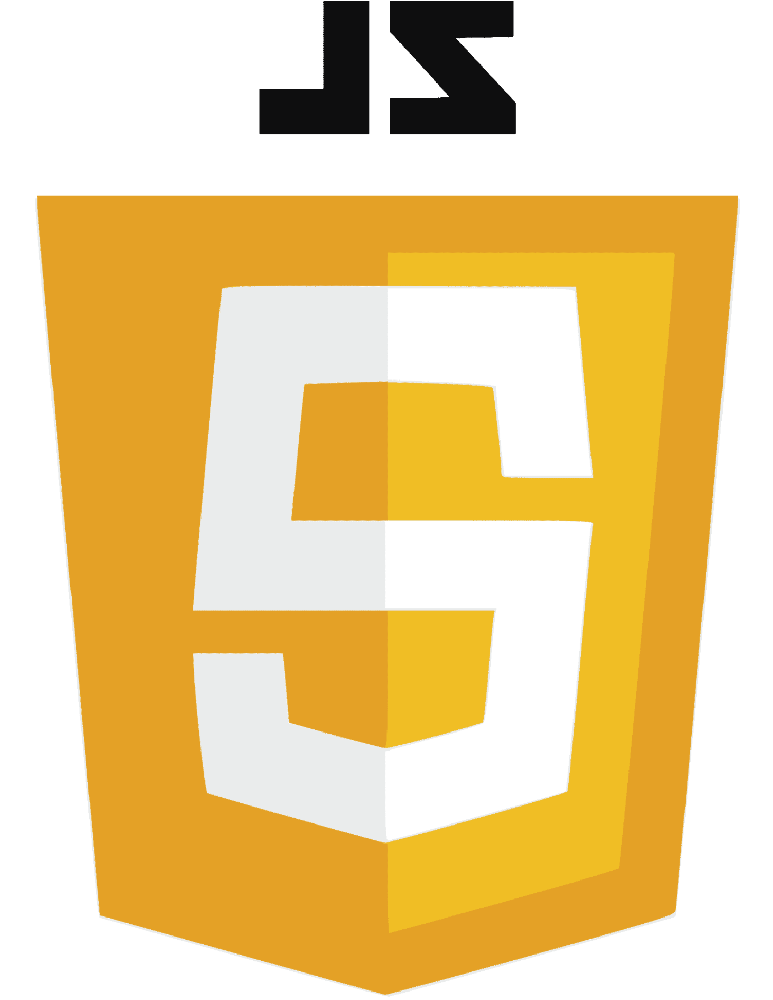

Qu'est ce que le développement Web
Il se décompose en 3 parties :
-
HTML

Il s'agit du langage permettant d'ordonné les différentes informations de notre site.
-
CSS
Il s'agit du langage permettant de stylisé les différentes informations de notre site.
-
JS
Il s'agit du langage permettant d'avoir des intéractions et de la dynamisité de notre site.